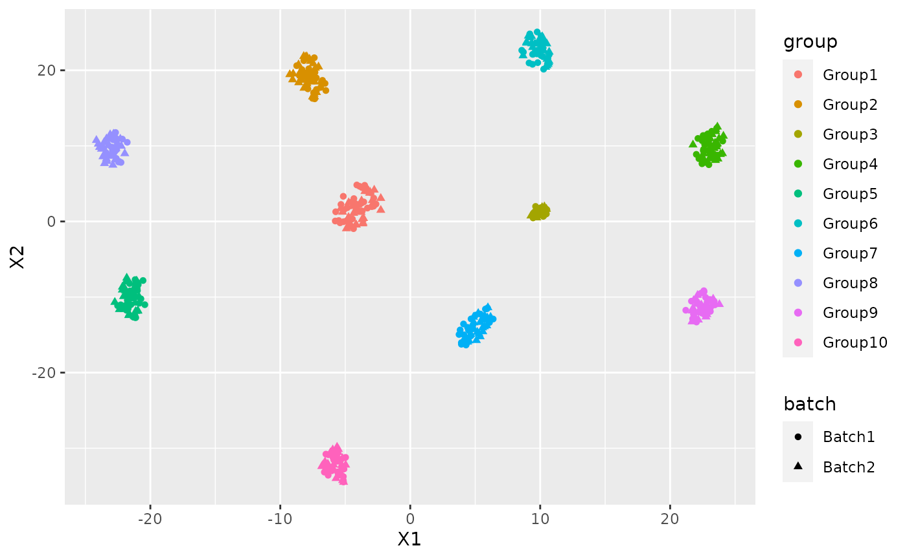

Dimensionality reduction and batch effect removal using NewWave
Source:vignettes/vignette.Rmd
vignette.RmdInstallation
First of all we need to install NewWave:
if(!requireNamespace("BiocManager", quietly = TRUE)) install.packages("BiocManager") BiocManager::install("NewWave")
Introduction
NewWave is a new package that assumes a Negative Binomial distributions for dimensionality reduction and batch effect removal. In order to reduce the memory consumption it uses a PSOCK cluster combined with the R package SharedObject that allow to share a matrix between different cores without memory duplication. Thanks to that we can massively parallelize the estimation process with huge benefit in terms of time consumption. We can reduce even more the time consumption using some minibatch approaches on the different steps of the optimization.
I am going to show how to use NewWave with example data generated with Splatter.
params <- newSplatParams() N=500 set.seed(1234) data <- splatSimulateGroups(params,batchCells=c(N/2,N/2), group.prob = rep(0.1,10), de.prob = 0.2, verbose = FALSE)
Now we have a dataset with 500 cells and 10000 genes, I will use only the 500 most variable genes. NewWave takes as input raw data, not normalized.
set.seed(12359) hvg <- rowVars(counts(data)) names(hvg) <- rownames(counts(data)) data <- data[names(sort(hvg,decreasing=T))[1:500],]
As you can see there is a variable called batch in the colData section.
colData(data) #> DataFrame with 500 rows and 4 columns #> Cell Batch Group ExpLibSize #> <character> <character> <factor> <numeric> #> Cell1 Cell1 Batch1 Group1 60232.9 #> Cell2 Cell2 Batch1 Group10 54695.4 #> Cell3 Cell3 Batch1 Group1 78926.4 #> Cell4 Cell4 Batch1 Group4 87657.2 #> Cell5 Cell5 Batch1 Group3 73405.8 #> ... ... ... ... ... #> Cell496 Cell496 Batch2 Group2 61958.4 #> Cell497 Cell497 Batch2 Group1 47937.4 #> Cell498 Cell498 Batch2 Group8 63092.7 #> Cell499 Cell499 Batch2 Group10 48594.1 #> Cell500 Cell500 Batch2 Group7 60533.1
IMPORTANT: For batch effecr removal the batch variable must be a factor
data$Batch <- as.factor(data$Batch)
We also have a variable called Group that represent the cell type labels.
We can see the how the cells are distributed between group and batch
pca <- prcomp_irlba(t(counts(data)),n=10) plot_data <-data.frame(Rtsne(pca$x)$Y)
plot_data$batch <- data$Batch plot_data$group <- data$Group
ggplot(plot_data, aes(x=X1,y=X2,col=group, shape=batch))+ geom_point()

There is a clear batch effect between the cells.
Let’s try to correct it.
NewWave
I am going to show different implementation and the suggested way to use them with the given hardware.
Some advise:
- Verbose option has default FALSE, in this vignette I will change it for explanatory intentions, don’t do it with big dataset because it can sensibly slower the computation
- There are no concern about the dimension of mini-batches, I always used the 10% of the observations
Standard usage
This is the way to insert the batch variable, in the same manner can be inserted other cell-related variable and if you need some gene related variable those can be inserted in V.
res <- newWave(data,X = "~Batch", K=10, verbose = TRUE) #> Time of setup #> user system elapsed #> 0.010 0.004 0.255 #> Time of initialization #> user system elapsed #> 0.032 0.004 0.437 #> Iteration 1 #> penalized log-likelihood = -1282856.2264231 #> Time of dispersion optimization #> user system elapsed #> 0.648 0.052 0.638 #> after optimize dispersion = -1051206.59518694 #> Time of right optimization #> user system elapsed #> 0.000 0.000 5.592 #> after right optimization= -1050434.59228996 #> after orthogonalization = -1050434.57568831 #> Time of left optimization #> user system elapsed #> 0.032 0.056 5.206 #> after left optimization= -1050039.72283736 #> after orthogonalization = -1050039.71645268 #> Iteration 2 #> penalized log-likelihood = -1050039.71645268 #> Time of dispersion optimization #> user system elapsed #> 0.730 0.076 0.676 #> after optimize dispersion = -1050031.33389233 #> Time of right optimization #> user system elapsed #> 0.001 0.000 5.248 #> after right optimization= -1049990.61766847 #> after orthogonalization = -1049990.61222651 #> Time of left optimization #> user system elapsed #> 0.032 0.056 4.626 #> after left optimization= -1049974.83440485 #> after orthogonalization = -1049974.83425322
In order to make it faster you can increase the number of cores using “children” parameter:
res2 <- newWave(data,X = "~Batch", K=10, verbose = TRUE, children=2) #> Time of setup #> user system elapsed #> 0.010 0.003 0.305 #> Time of initialization #> user system elapsed #> 0.025 0.008 0.454 #> Iteration 1 #> penalized log-likelihood = -1282856.22640376 #> Time of dispersion optimization #> user system elapsed #> 0.654 0.052 0.620 #> after optimize dispersion = -1051206.59247072 #> Time of right optimization #> user system elapsed #> 0.000 0.000 2.945 #> after right optimization= -1050434.5915141 #> after orthogonalization = -1050434.57491086 #> Time of left optimization #> user system elapsed #> 0.024 0.013 2.680 #> after left optimization= -1050039.72923366 #> after orthogonalization = -1050039.72284246 #> Iteration 2 #> penalized log-likelihood = -1050039.72284246 #> Time of dispersion optimization #> user system elapsed #> 0.718 0.076 0.664 #> after optimize dispersion = -1050031.34010247 #> Time of right optimization #> user system elapsed #> 0.001 0.000 2.666 #> after right optimization= -1049990.62754631 #> after orthogonalization = -1049990.62208798 #> Time of left optimization #> user system elapsed #> 0.022 0.036 2.281 #> after left optimization= -1049974.85781749 #> after orthogonalization = -1049974.85769047
Commonwise dispersion and minibatch approaches
If you do not have an high number of cores to run newWave this is the fastest way to run. The optimization process is done by three process itereated until convercence.
- Optimization of the dispersion parameters
- Optimization of the gene related parameters
- Optimization of the cell related parameters
Each of these three steps can be accelerated using mini batch, the number of observation is settled with these parameters:
- n_gene_disp : Number of genes to use in the dispersion optimization
- n_cell_par : Number of cells to use in the cells related parameters optimization
- n_gene_par : Number of genes to use in the genes related parameters optimization
res3 <- newWave(data,X = "~Batch", verbose = TRUE,K=10, children=2, n_gene_disp = 100, n_gene_par = 100, n_cell_par = 100) #> Time of setup #> user system elapsed #> 0.014 0.000 0.269 #> Time of initialization #> user system elapsed #> 0.026 0.004 0.394 #> Iteration 1 #> penalized log-likelihood = -1282856.22632209 #> Time of dispersion optimization #> user system elapsed #> 0.671 0.045 0.629 #> after optimize dispersion = -1051206.59471786 #> Time of right optimization #> user system elapsed #> 0.000 0.000 3.042 #> after right optimization= -1050434.59628206 #> after orthogonalization = -1050434.57968003 #> Time of left optimization #> user system elapsed #> 0.025 0.036 2.732 #> after left optimization= -1050039.56579659 #> after orthogonalization = -1050039.5593971 #> Iteration 2 #> penalized log-likelihood = -1050039.5593971 #> Time of dispersion optimization #> user system elapsed #> 0.268 0.068 0.206 #> after optimize dispersion = -1050039.5593971 #> Time of right optimization #> user system elapsed #> 0.001 0.000 0.531 #> after right optimization= -1050029.40851855 #> after orthogonalization = -1050029.39446475 #> Time of left optimization #> user system elapsed #> 0.020 0.025 0.405 #> after left optimization= -1050028.66617807 #> after orthogonalization = -1050028.66608273
Genewise dispersion mini-batch
If you have a lot of core disposable or you want to estimate a genewise dispersion parameter this is the fastes configuration:
res3 <- newWave(data,X = "~Batch", verbose = TRUE,K=10, children=2, n_gene_par = 100, n_cell_par = 100, commondispersion = F) #> Time of setup #> user system elapsed #> 0.010 0.006 0.294 #> Time of initialization #> user system elapsed #> 0.026 0.003 0.439 #> Iteration 1 #> penalized log-likelihood = -1282856.22637469 #> Time of dispersion optimization #> user system elapsed #> 1.096 0.064 1.073 #> after optimize dispersion = -1051206.593446 #> Time of right optimization #> user system elapsed #> 0.001 0.000 2.940 #> after right optimization= -1050434.59053808 #> after orthogonalization = -1050434.57393961 #> Time of left optimization #> user system elapsed #> 0.024 0.013 2.675 #> after left optimization= -1050039.72295888 #> after orthogonalization = -1050039.71657501 #> Iteration 2 #> penalized log-likelihood = -1050039.71657501 #> Time of dispersion optimization #> user system elapsed #> 0.089 0.050 0.547 #> after optimize dispersion = -1045392.88468724 #> Time of right optimization #> user system elapsed #> 0.001 0.000 0.621 #> after right optimization= -1045385.50478546 #> after orthogonalization = -1045385.50439184 #> Time of left optimization #> user system elapsed #> 0.022 0.021 0.622 #> after left optimization= -1045342.21171969 #> after orthogonalization = -1045342.21100101 #> Iteration 3 #> penalized log-likelihood = -1045342.21100101 #> Time of dispersion optimization #> user system elapsed #> 0.103 0.050 0.279 #> after optimize dispersion = -1045342.22837589 #> Time of right optimization #> user system elapsed #> 0.001 0.000 0.580 #> after right optimization= -1045335.17413319 #> after orthogonalization = -1045335.17300122 #> Time of left optimization #> user system elapsed #> 0.025 0.017 0.557 #> after left optimization= -1045294.86721737 #> after orthogonalization = -1045294.86649371
NB: do not use n_gene_disp in this case, it will slower the computation.
Now I can use the latent dimension rapresentation for visualization purpose:
latent <- reducedDim(res) tsne_latent <- data.frame(Rtsne(latent)$Y) tsne_latent$batch <- data$Batch tsne_latent$group <- data$Group
ggplot(tsne_latent, aes(x=X1,y=X2,col=group, shape=batch))+ geom_point()

or for clustering:
cluster <- kmeans(latent, 10) adjustedRandIndex(cluster$cluster, data$Group) #> [1] 0.8814338
Session Information
sessionInfo() #> R version 4.0.2 Patched (2020-09-24 r79253) #> Platform: x86_64-pc-linux-gnu (64-bit) #> Running under: Ubuntu 20.04.1 LTS #> #> Matrix products: default #> BLAS/LAPACK: /usr/lib/x86_64-linux-gnu/openblas-pthread/libopenblasp-r0.3.8.so #> #> locale: #> [1] LC_CTYPE=en_US.UTF-8 LC_NUMERIC=C #> [3] LC_TIME=en_US.UTF-8 LC_COLLATE=en_US.UTF-8 #> [5] LC_MONETARY=en_US.UTF-8 LC_MESSAGES=C #> [7] LC_PAPER=en_US.UTF-8 LC_NAME=C #> [9] LC_ADDRESS=C LC_TELEPHONE=C #> [11] LC_MEASUREMENT=en_US.UTF-8 LC_IDENTIFICATION=C #> #> attached base packages: #> [1] parallel stats4 stats graphics grDevices utils datasets #> [8] methods base #> #> other attached packages: #> [1] NewWave_0.99.7 SharedObject_1.3.17 #> [3] mclust_5.4.6 ggplot2_3.3.2 #> [5] Rtsne_0.15 irlba_2.3.3 #> [7] splatter_1.13.0 SingleCellExperiment_1.11.7 #> [9] SummarizedExperiment_1.19.6 DelayedArray_0.15.9 #> [11] matrixStats_0.56.0 Matrix_1.2-18 #> [13] Biobase_2.49.1 GenomicRanges_1.41.6 #> [15] GenomeInfoDb_1.25.11 IRanges_2.23.10 #> [17] S4Vectors_0.27.13 BiocGenerics_0.35.4 #> #> loaded via a namespace (and not attached): #> [1] locfit_1.5-9.4 xfun_0.17 beachmat_2.5.5 #> [4] BiocSingular_1.5.1 lattice_0.20-41 colorspace_1.4-1 #> [7] vctrs_0.3.4 htmltools_0.5.0 yaml_2.2.1 #> [10] rlang_0.4.7 pkgdown_1.6.1.9000 pillar_1.4.6 #> [13] withr_2.3.0 glue_1.4.2 BiocParallel_1.23.2 #> [16] GenomeInfoDbData_1.2.3 lifecycle_0.2.0 stringr_1.4.0 #> [19] zlibbioc_1.35.0 munsell_0.5.0 gtable_0.3.0 #> [22] rsvd_1.0.3 ragg_0.3.1 memoise_1.1.0 #> [25] evaluate_0.14 labeling_0.3 knitr_1.30 #> [28] Rcpp_1.0.5 backports_1.1.10 scales_1.1.1 #> [31] checkmate_2.0.0 desc_1.2.0 cpp11_0.2.1 #> [34] XVector_0.29.3 farver_2.0.3 systemfonts_0.3.1 #> [37] fs_1.5.0 digest_0.6.25 stringi_1.5.3 #> [40] grid_4.0.2 rprojroot_1.3-2 tools_4.0.2 #> [43] bitops_1.0-6 magrittr_1.5 RCurl_1.98-1.2 #> [46] tibble_3.0.3 crayon_1.3.4 pkgconfig_2.0.3 #> [49] ellipsis_0.3.1 assertthat_0.2.1 rmarkdown_2.3 #> [52] R6_2.4.1 compiler_4.0.2